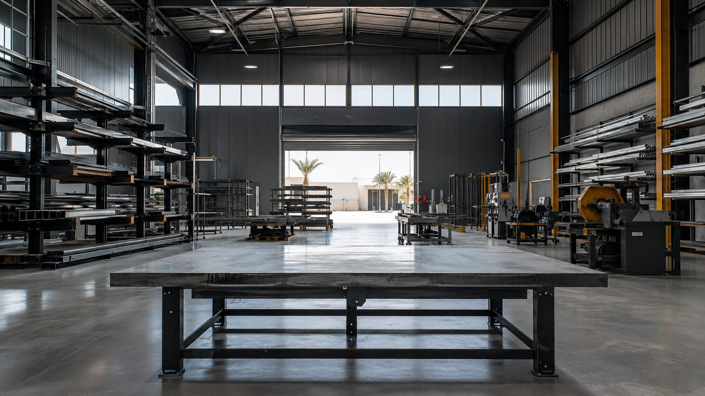
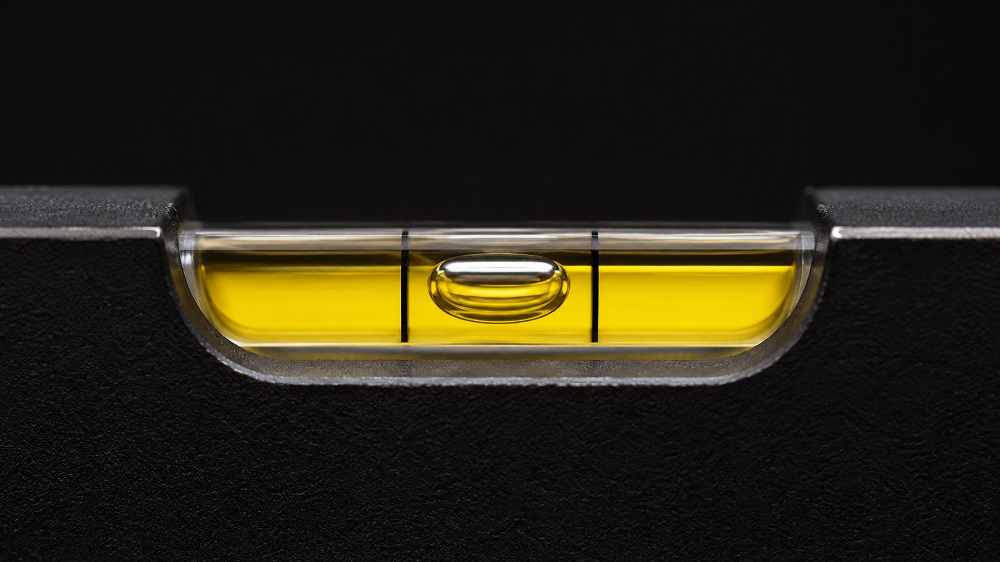

من نحن
إما أن يكون صحيحًا، أو فهو غير منتهٍ
قبان تصنع الأعمال المعدنية المعمارية في البحرين. الاسم يعني ميزان القبان، والشعار ميزان ماء. وكلاهما يقول الشيء نفسه.

الورشةالفكرة
دقة تُرى
تُباع الأعمال المعدنية في هذا السوق عادة بسعر وصورة. أما ما يحدد عمرها فعلًا — السبيكة، ونظام الطلاء، والقياس، وطريقة التثبيت — فنادرًا ما يُكتب، ولا يُشرح تقريبًا أبدًا.
بنينا قبان على العادة المعاكسة: قِس قبل أن تصنع، وحدّد قبل أن تسعّر، واضبط الميزان قبل أن تغادر. ثم اكتب ذلك كله، ليتمكن العميل من محاسبتنا عليه.
هذا ليس موقفًا تسويقيًا، بل الطريقة الوحيدة لصنع عمل يصمد أمام صيف البحرين وهواء السواحل لمدة أطول من الضمان نفسه.
ما نلتزم به
أربعة التزامات
القياس أولًا
لا يُصنّع أي مشروع بقياس عبر الهاتف. القياس في الموقع أساسي ولا يُحتسب على حدة أبدًا.
التحديد كتابةً
درجة الخامة ونظام الطلاء والمكوّنات والضمان ومدة التنفيذ في كل عرض سعر. قابل للمقارنة بندًا ببند.
قول ما لا يُحب سماعه
إذا كان الإصلاح لا يستحق، أو التصميم غير قابل للتنفيذ، أو كان خيار أقل تكلفة أنسب لك — سنقولها لك.
تسليم نظيف
أسطح محمية، ومحاذاة متحقق منها، وموقع مُخلى، وتسليم مصوَّر. في كل مرة.
الاسم
قبان
كلمة «قبان» تعني ميزان القبان — أداة الوزن التقليدية المستخدمة في الخليج والمنطقة. ويقوم على مبدأ بسيط: وزن معلوم مقابل وزن مجهول، حتى يستوي الطرفان.
الوزن يعني الحكم، ويعني دقة يمكنك التحقق منها بدل أن تأخذها على الثقة. لهذا كان الشعار حرف Q مبنيًّا كإطار وبداخله ميزان ماء — الفكرة نفسها، مرسومة مرتين.

الميزاننطاق العمل
أين نعمل
مملكة البحرين — سكني وتجاري وصناعي. بتركيز حيث تتجمع الفلل والتسليمات الجديدة.
الرفاع · سار · الجنبية · الحمالة · البديع · أمواج · ديار المحرق · الدرة · المنامة · المحرق · مدينة عيسى · سترة — والمناطق الجديدة.